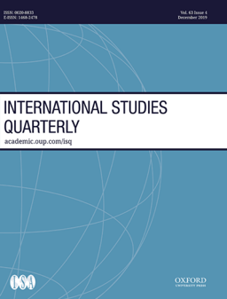

收录于合集

期刊简介

《国际研究季刊》（ International Studies Quarterly ）是国际研究协会的旗舰期刊，由牛津大学出版社每年发行四期，旨在发表与国际研究中重要理论性、实证性、规范性主题相关的领先学术成果。根据Journal Citation Reports的数据，2018年该期刊的影响因子为2.172。
本期编委
【 编译 】徐垚晟 董骁天 刘瑛琛 李源
【 校对 】徐垚晟 董骁天 刘瑛琛 李源
【 审核 】金磊
【 排版 】高佳美

本期目录
1. A Growing Queer Divide: The Divergence between Transnational Advocacy Networks and Foreign Aid in Diffusing LGBT Policies
跨国倡议网络与外国援助在推动LGBT政策方面的差异
2. Transnational Ties and Support for Foreign Aid
跨国联系与对对外援助的支持
3.Sexuality as a Standard of Civilization:Historicizing (Homo)Colonial Intersections of Race, Gender, and Class
作为文明标准的性存在：种族、性别与阶级三者殖民时期交集的史料分析
4.Transnational Advocacy and NGOs in the Digital Era: New Forms of Networked Power
跨国倡议与数字时代的非政府组织：网络化权力的新形式
01
跨国倡议网络与外国援助在推动LGBT政策方面的差异
【题目 】 A Growing Queer Divide: The Divergence between Transnational Advocacy Networks and Foreign Aid in Diffusing LGBT Policies
【作者】 Kristopher Velasco, 德克萨斯大学奥斯汀分校博士候选人；
【摘要】 尽管在推动LGBT性别规范方面取得很多成就，但在全球范围内，一些国家非常支持推动这一规范，而另外一些国家则公开反对。为了解释这一现象，作者通过两种机制调查了全球范围内LGBT规范的传播：跨国倡议网络和外国援助条件。通过考察1990年至2016年110个非经济合作与发展组织成员国对LGBT政策的推动，作者发现有证据表明，各国接受LGBT规范的过程确实可以有助于解释这些不同的态度。通过跨国倡议网络推动LGBT规范会增强这些规范的影响力，并催生出更加具有进步性的政策，而依赖外国援助推动LGBT规范则会使得各国拒绝这一规范。因此，这项研究提供了新的视角，使人们了解是哪些机制参与塑造了国家对这一规范的遵从，并增加了新的证据质疑外国援助作为促进LGBT权利的工具的有效性。
Despite years of success, lesbian, gay, bisexual, and transgender (LGBT) norms are becoming increasingly polarized across the global landscape—with some countries strongly complying with new expectations while others openly defy them. To explain these divergent paths, I investigate the transmission of global LGBT norms via two mechanisms: transnational advocacy networks and foreign aid conditionalities. In examining LGBT policy adoption across 110 non-Organisation for Economic Co-operation and Development (OECD) countries between 1990 and 2016, I find evidence that the process through which states are exposed to LGBT norms can indeed help explain these different approaches. Exposure to LGBT norms through transnational advocacy networks enhances the effect of these norms and is associated with more progressive policy adoption, while greater dependence on foreign aid pushes states to reject LGBT norms. Consequently, this study provides new insights into how the mechanism through which countries are exposed to norms shapes compliance and adds new evidence questioning the effectiveness of foreign aid as a tool to advance LGBT rights.
【编译】 徐垚晟
【校对】 李源
【审核】 金磊
02
跨国联系与对对外援助的支持
【题目】 Transnational Ties and Support for Foreign Aid
【作者】 Lauren Prather，加州大学圣迭戈分校助理教授；
【摘要】 尽管全球化和国际移民增强了跨境的私人联系，但我们并不了解这种联系如何影响人们看待对外政策的态度。这项研究检验了跨国联系如何影响援助国对对外援助的支持程度。本文认为跨国联系通过两种机制加强了对对外援助的支持——群体利益和世界主义。一项针对1000名拉丁裔美国人的全国性调查中嵌入的首创调查实验表明，拉丁裔人在跨国联系的紧密程度上存在显著差异，而这与他们对外国援助的支持程度密切相关。通过将美国对外援助项目的分布位置作为变量，这项实验结果表明，尽管群体利益能够部分解释这种现象，世界主义也同样是一个重要的机制。事实上，有着跨国联系的拉丁裔人同等地支持对非洲和拉丁美洲的对外援助。对英美的其他非拉丁裔和族群进行的普遍性测试则揭示了在拉丁裔美国人社区以外，群体利益可能是一个相对更强的影响机制。这项研究鼓励人们进一步探讨跨国联系与对外政策态度之间的关系，并为国际移民和对外援助两者间逐渐显现的联系提供了新的洞见。
Although globalization and international migration have increased personal connections across national borders, we know little about how these connections affect attitudes toward foreign policy. This study examines how transnational ties affect support for foreign aid in donor countries. It argues that transnational ties increase support for foreign aid via two mechanisms: group interests and cosmopolitanism. An original survey experiment embedded in a national survey of one thousand Latino Americans shows that Latinos vary significantly in the strength of their transnational ties, which is strongly correlated with support for foreign aid. The findings from the experiment, which varies the location of an American foreign aid program, demonstrate that, although group interests explain some of this effect, cosmopolitanism is also an important mechanism. Indeed, Latinos with transnational ties equally support aid to Africa and Latin America. A test of the generalizability of the findings to other racial and ethnic groups in the United States and United Kingdom reveal that group interests may be a more powerful mechanism outside of the Latino American community. This study encourages further work on the relationship between transnational ties and foreign policy attitudes and provides insight into the emerging link between international migration and foreign aid.
【编译】 董骁天
【校对】 刘瑛琛
【审核】 金磊
03
作为文明标准的性存在：种族、性别与阶级三者殖民时期交集的史料分析
【题目】Sexuality as a Standard of Civilization: Historicizing (Homo)Colonial Intersections of Race, Gender, and Class
【作者】Andrew Delatolla, 开罗美国大学（The American University in Cairo）政治学系国际关系助理教授。
【摘要】近些年，对同性性存在的接受与容忍已经成为西式自由、社会与政治进步的标志。在关于同性恋规范、同性民族主义和同性殖民主义的讨论中，人们已经注意到了这一点。尽管其中一些讨论触及到了性存在、种族、性别和阶级之间的交集，但本文进一步主张，在历史上这种交集关系是作为文明标准而产生的。文章指出，在产生社会与政治排斥方面，性存在的政治与治理，及其与种族、性别和阶级的交集具有历史重要性。在提出这一论点时，文章思考了从19世纪到21世纪，性存在的政治与治理如何在将殖民地文明标准由异性恋导向转为同性恋导向的同时维持了一个“分裂的世界”。文章选取了从19世纪到当代的多个案例，并使用包括民族志研究、田野调查和历史文件等多种材料，解释了性存在政治的时间和地理联系。
In recent years, acceptance and tolerance of homosexuality has become symbolic of Western liberal, social, and political progress. This has been noted in discussions on homonormativity, homonationalism, and homocolonialism. While some of these discussions have touched on the intersections between sexuality, race, gender, and class, this article argues that this relationship has been historically produced as a standard of civilization. It notes that the politics and governance of sexuality, and its intersections with race, gender, and class, have historical relevance in producing social and political exclusions. In building this argument, the article considers how the politics and governance of sexuality have maintained a “divided world,” from the nineteenth century to the twenty-first century, transforming from a hetero- to a homocolonial standard of civilization. It draws from a number of examples, from the nineteenth century to the contemporary period, using a diverse set of materials, including ethnographic research, fieldwork, and historical documents to explain temporal and geographic connections regarding the politics of sexuality.
【编译】 刘瑛琛
【校对】 董骁天
【审核】 金磊
04
跨国倡议与数字时代的非政府组织：网络化权力的新形式
【题目】 Transnational Advocacy and NGOs in the Digital Era: New Forms of Networked Power
【作者】 Nina Hall, 约翰霍普金斯大学助理教授；
Hans Peter Schmitz, 圣地亚哥大学教授；
J Michael Dedmon，雪城大学博士候选人。
【摘要】 国际关系学者已经认识到了技术对非政府组织构建跨国网络与提高其影响力的重要性。然而，学者们通常关注非政府组织、国家与国际组织之间的精英网络。本文探讨了数字技术如何在非政府组织及其成员之间催生出新形式的网络化权力。数字化工具为获得支持者的快速反馈、实现动员的快速增长与进行更加去中心化的运动提供了可能。更为重要的是，在数字时代，非政府组织不仅要决定使用哪些数字化平台，还要决定是否将决策权下放给其支持者。这产生了两个问题：第一，非政府组织的工作人员或其支持者主要负责界定并制作倡议内容吗？第二，数字化行动的目标是扩大或增强参与吗？对这些问题的回答产生了四种数字化策略：劝服(proselytizing)、检验(testing)、对话(conversing)与促进(facilitating)。这些策略改变了倡议实践，但只有促进策略催生了基于支持者—支持者联系的新形式的网络化权力。数字化策略对各个组织，倡议部门的性质，及其相对于国家、企业与其他非国家行为体的权力产生了深刻影响。数字化模式的采用塑造了非政府组织如何选择其运动、如何合法化其主张、以及它们所依赖的主要策略。
International relations (IR) scholars have recognized the importance of technology in enabling nongovernmental organizations (NGOs) to build transnational networks and enhance their influence. However, IR scholars have typically focused on elite networks across NGOs, states, and international organizations. This article considers how digital technologies generate new types of networked power between NGOs and their members. Digital tools allow for fast feedback from supporters, rapid surges in mobilization, and more decentralized campaigns. Importantly, in the digital era, NGOs must decide not only which digital platforms to use, but also whether to devolve decision- making to their supporters. Two questions arise: First, do NGO staff or supporters primarily define and produce advocacy content? Second, is the goal of digital activism to broaden or intensify participation? Answers to these questions generate four digital strategies: proselytizing, testing, conversing, and facilitating. These strategies change advocacy practices, but only facilitating strategies open up new forms of networked power based on supporter-to-supporter connections. Digital strategies have profound ramifications for individual organizations, the nature of the advocacy sector, and its power in relation to states, corporations, and other nonstate actors. Digital adoption patterns shape how NGOs choose campaigns, how they legitimate their claims, and what strategies they rely on.
【编译】 李源
【校对】 徐垚晟
【审核】 金磊